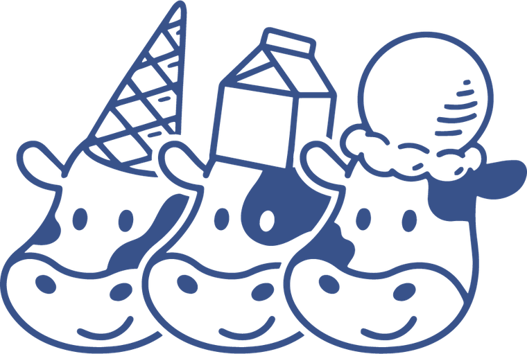

금연구역 표지는 디자인 자유물이 아니라 법으로 내용이 정해진 표지입니다. 그런데 현행본에는 법이 요구하는 문구가 빠져 있습니다. 이번 개선의 1순위는 예쁘게 만드는 게 아니라 먼저 적법하게 만드는 것입니다.
법은 금연 표지에 ① 금연을 상징하는 그림 또는 문자와 함께 ② 위반 시 조치사항(과태료 고지)을 넣도록 요구합니다. 현행본에는 “금연을 정중히 부탁드립니다”만 있고 과태료 고지가 없습니다. ①은 있으나 ②가 없습니다.
표지가 요건에 미달하면 시정명령 대상이고, 이를 따르지 않으면 500만원 이하의 과태료가 사업주에게 부과됩니다. (흡연자 본인은 10만원 이하)
「국민건강증진법 시행규칙」 제6조 제4항 및 별표 2 제1호 · 과태료 「국민건강증진법」 제34조 제1항 제2호과태료 고지 문구가 없습니다. 이건 취향 문제가 아니라 적법성 문제입니다.
“금연”만 빨강, “구역”은 네이비로 한 단어가 두 색으로 쪼개져 있습니다. 픽토그램의 빨강은 표준이지만, 글자의 빨강은 근거가 없습니다.
같은 파일에 “정중히 부탁드립니다”(요청)와 “화기물 보관 중 절대 금연!!”(안전 경고)가 같은 톤으로 섞여 있습니다. 위험도가 다르면 표지도 달라야 합니다.
브랜드 팔레트에 빨강은 없습니다. 하지만 금지 픽토그램의 적색은 국제표준(ISO 7010)이고 법도 “눈에 잘 띄도록”을 요구합니다. 여기서 빨강을 빼면 표지의 기능이 무너집니다.
→ 픽토그램에만 안전적색, 타이포에는 쓰지 않음. 이건 브랜드 위반이 아니라 사전에 정의된 예외입니다.
원+45° 사선은 ISO 7010 P002 구조를 그대로 지킵니다(고리·사선 두께 = 지름의 8%). 다만 담배는 검정 대신 네이비 — 현행본이 이미 내린 좋은 결정이라 이어받습니다. 구조는 표준, 색조는 브랜드.
과태료 고지는 빼면 안 되는 요소입니다. 장식이 아니라 구조로 못 박습니다 — 네이비 테두리 박스 안에 고정 배치. 과태료 금액만 적색으로 시선을 잡습니다. 영문 병기는 법이 허용합니다(외국인 방문 대비).
법정 표지(출입구·필수)와 야외석 협조 요청(법정 표지 아님)은 다른 물건입니다. 하나로 합치면 법정 표지가 부탁처럼 보이고, 부탁이 법처럼 보입니다.
→ A안 = 정식 표지(마스코트 없음, 로고만) / B안 = 협조 요청(마스코트 1개 허용).
이 건물 또는 시설은 전체가 금연구역으로,
지정된 장소 외에서는 담배를 피울 수 없습니다.
이를 위반할 경우 「국민건강증진법」에 따라
10만원 이하의 과태료가 부과됩니다.

흡연은 지정된 장소에서 부탁드립니다.
| 규격 | A4 세로 210×297mm — 현행본과 동일하게 유지(기존 부착 위치·코팅 자산 재사용). 출입구가 넓으면 A3 확대 파생 가능 |
|---|---|
| A안 소재 | 실내 — A4 코팅 또는 시트 스티커. 아카이브의 영업마감(A4가로 코팅용) 선례와 동일 공정 |
| B안 소재 | 실외 — 포맥스(아카이브 기존 소재 어휘). 야외 자외선·우천 노출 → UV 인쇄 + 무광 라미네이팅 권장 |
| 부착 위치 | A안 = 건물 출입구(법정 필수) + 계단·화장실 등 주요 위치 / B안 = 야외석 진입부·테이블 인근 |
| 인쇄 색상 | 네이비 C93 M74 Y19 K5(⚠미확정 — §아래) · 안전적색 #e2231a 계열 · 4도 프로세스(별색 없음) |
| 발주 파일 | 아카이브 규약대로 원본 + (글씨깸) 쌍으로 남길 것. 파일명 금연구역 안내_A4_YYMMDD.ai |
C93 M74 Y19 K5 / C87 M69 Y20 K4) 어느 쪽이 로고의 것인지 아직 모릅니다. 인쇄 발주 전 .ai 스와치 확인이 필요합니다.font-family), 산돌구름 라이선스를 보유한 작업용 맥에서는 정품 글자가 뜹니다. 라이선스 없는 기기에서는 카페24 써라운드로 폴백됩니다 — 그 경우 글자 모양이 실제와 다릅니다.(글씨깸)으로 아웃라인화해 두면 구독과 무관하게 영구 재발주할 수 있습니다.